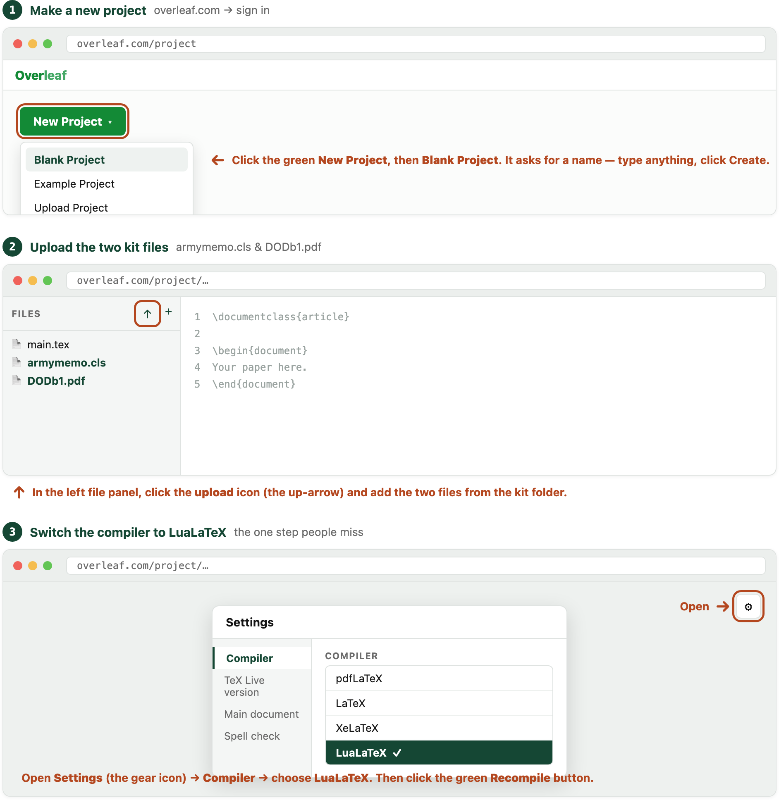

You watched me generate an AR 25-50 memo in seconds during class and asked how it’s done. Here it is — the simple way first. Do this once and you’ll have a clean, compliant MFR tonight.
Why not just use Word? In Word, you’d line up the exact AR 25-50 margins, fonts, and spacing yourself. Here, a free website does that part for you, so you only deal with the words. It won’t be perfect on the first try, but it gets you most of the way there, fast.
\backslash words exactly as they are. Easiest: leave the <…> bits alone and just fill the [ brain-dump ] block at the bottom — the AI fills in the rest. Then send.\documentclass. If it added ``` marks or sentences around it, leave those out.armymemo.cls and DODb1.pdf from the kit folder. (picture 2)main.tex with sample text. Select all of it, delete it, and paste in what you copied from the AI.\rule{…}, type your information over it, and Recompile.You are a military correspondence specialist. Write an Army Memorandum for Record that strictly complies with AR 25-50.
Output it as LaTeX source using the `armymemo` document class, matching this exact structure (keep these commands, fill in the values):
\documentclass{armymemo}
\address{<organization name>}
\address{<street address>}
\address{<city, state ZIP+4>}
\officesymbol{<office symbol>}
\signaturedate{<day Month year>}
\memoline{MEMORANDUM FOR RECORD}
\subject{<subject line, 10 words or fewer>}
\author{<FULL NAME IN CAPS>}\rank{<rank spelled out>}\branch{<branch abbrev>}
\title{<duty title>}
\begin{document}
\begin{enumerate}
\item References. <authorities, or omit if none>
\item Purpose. <bottom line up front, 1-2 sentences>
\item <body paragraph(s); use nested \begin{enumerate} for subparagraphs>
\item The point of contact is the undersigned at <phone> or <email>.
\end{enumerate}
\end{document}
Writing rules:
- Active voice throughout. Bottom line up front in paragraph 2 (Purpose).
- References in paragraph 1, point of contact in the last paragraph.
- Subject line: 10 words or fewer. Two spaces after each period.
CRITICAL — do not invent any fact. If you do not have a name, date, unit, phone number, or statistic, leave a blank exactly like this: \rule{1.5in}{0.4pt} — never make one up.
OUTPUT FORMAT — return ONLY the raw LaTeX, starting with \documentclass{armymemo}. Do NOT wrap it in markdown code fences (no triple backticks) and do NOT add any explanation before or after it.
Here is what the memo is about:
[ Brain-dump everything you know here — topic, your name/rank/unit if you want it filled in, the policy or event, key dates, who it's for. Messy is fine. ]

1. Mind where the words go. Ask Sage is a government, CUI-approved system — fine for sensitive memo content. Overleaf and commercial chatbots are not. Never paste CUI, PHI, or real PII into them. If your memo contains CUI, skip Overleaf — make the PDF on your own computer instead (below), so nothing leaves your machine.
2. You sign it, you own it. AI invents names, dates, and regulation numbers with total confidence — a wrong reg number looks exactly as authoritative as a right one. The sample prompt tells it to leave blanks instead of guessing. Read every line before it goes out; “the AI wrote it” is not a defense.
OptionalThe fast path above is a complete, permanent solution — many people never need more. If you make memos often, here are two setups that remove the copy-paste.
First, the one bit of jargon. That block of formatting text has a name — LaTeX (say “LAY-tek”). Overleaf is just a free website that turns it into the finished PDF. And the reason every memo comes out in correct AR 25-50 format is one file in the kit, armymemo.cls — think of it as the formatting rulebook. You and the AI supply the words; it handles the layout. The two options below do the same thing, just without copying text between two websites.
armymemo.cls + DODb1.pdf in VS Code; start Claude Code./memo skill that also auto-loads the regs; you can build one once you’re comfortable.)armymemo.cls and DODb1.pdf next to your memo file, then run this command twice: lualatex memo.tex && lualatex memo.tex. Because nothing leaves your computer, this path is safe for CUI. (The memo uses Times New Roman + Arial; Mac and Overleaf already have them, a bare Linux machine may need the msttcorefonts package first.)
| Method | Setup | Effort per memo | Stays on your computer? | Best for |
|---|---|---|---|---|
| Chat AI → Overleaf | None — browser only | ~3 min (copy-paste) | No — uses Overleaf | Everyone’s starting point; all most people need |
| Claude Cowork | Desktop app, paid plan | ~2 min, no copy-paste | Writing yes; PDF if LaTeX installed | Frequent memos, non-technical |
| Claude Code | Most — app + LaTeX | Fastest — one line | Yes — fully local (CUI-safe) | Power users; sensitive content |
sample-prompt.md — the ready-to-paste prompt for Part A (no uploads).armymemo.cls — the rulebook (all AR 25-50 formatting). Upload to Overleaf.DODb1.pdf — the DoD seal. Upload to Overleaf too.mfr-template-EXAMPLE-output.pdf — what a finished memo looks like.mfr-template.tex — a blank fill-in memo, if you’d rather start by hand.README.txt — the same steps, in the folder.digsig.sty — optional; ignore unless you add a digital signature.The starter kit gets you a memo today. Past that, going further means teaching yourself a little LaTeX and your tools — and honestly, it doesn’t take much. Start with Learn LaTeX in 30 minutes; that’s genuinely enough to be dangerous. These are the resources I’d point you to:
The single best starting point. Free, hands-on.
How to switch to LuaLaTeX (and why it matters here).
The source of armymemo.cls — docs and updates.
Preparing and Managing Correspondence, 10 Oct 2020.
The Air Force writing-style bible the prompt leans on.
For the Method-3 setup, when you’re ready.
The desktop agent behind Method 2.